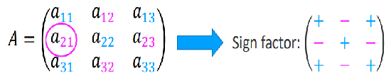
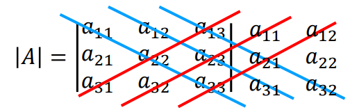

The Minor of a21 is;
\begin{bmatrix} a_{12} & a_{13} \\ a_{32} & a_{33} \end{bmatrix}
In this section we will look at the determinants for 2x2 and 3x3 matrices. Every square matrix has a special quantity associated with it, called its determinant. The determinate is important because it gives us another way to solve a set of equations.
The symbols of the determinant can be det(A) or |A|.
Second-order Determinant: the value is equal to the product of the elements on the main diagonal minus the product of the elements on the secondary diagonal
det(A) = |A| =\begin{vmatrix} a & b\\ c & d\end{vmatrix} = ad - cb
Third-order Determinant: the value is determined using a method of developing the minors of an element of the matrix. The minor of an element in a determinant is a determinant of lower order, obtained by deleting the row and the column in which that element lies.
| |
The Minor of a21 is; \begin{bmatrix} a_{12} & a_{13} \\ a_{32} & a_{33} \end{bmatrix}
|
The sign factor of an element depends on the position of the element in the determinant. To find the sign factor, add the row number and the column number of the element. If the sum is even, the sign factor is +1; if the sum is odd, the sign factor is -1.
Cofactor of an element is the minor of the element attached with the sign factor, e.g. the cofactor of a21 is;
| (-1)2+1 | \begin{bmatrix} a_{12} & a_{13} \\ a_{32} & a_{33} \end{bmatrix} |
So, the determinant of a 𝟑 × 𝟑 matrix is defined as follows:
To solve to blue box you would use the following calculation;
| a11 | \begin{bmatrix} a_{12} & a_{13} \\ a_{32} & a_{33} \end{bmatrix} | -a12 | \begin{bmatrix} a_{21} & a_{23} \\ a_{31} & a_{33} \end{bmatrix} | +a13 | \begin{bmatrix} a_{21} & a_{22} \\ a_{31} & a_{32} \end{bmatrix} |
Or with the Green box;
| -a12 | \begin{bmatrix} a_{21} & a_{23} \\ a_{31} & a_{33} \end{bmatrix} | +a22 | \begin{bmatrix} a_{11} & a_{13} \\ a_{31} & a_{33} \end{bmatrix} | -a32 | \begin{bmatrix} a_{11} & a_{13} \\ a_{21} & a_{23} \end{bmatrix} |
For 3x3 matrices only;
|A| = a11a22a33 + a12a23a31 + a13a21a32 - a31a22a13 - a32a23a11 - a33a21a12
Properties of Determinates
Created by UP938426 - Contact details
Project Supervisor - Dr John Geddes